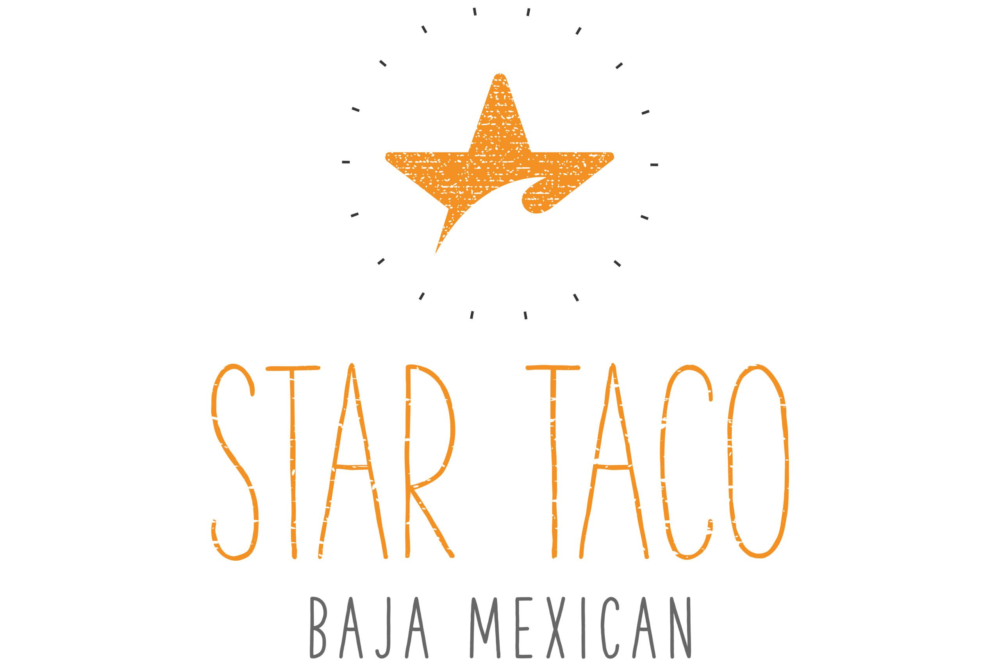
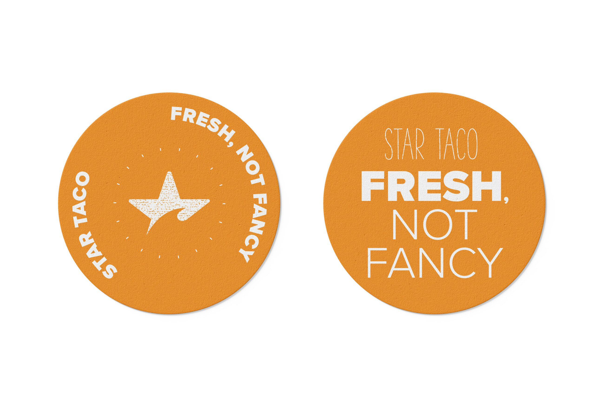
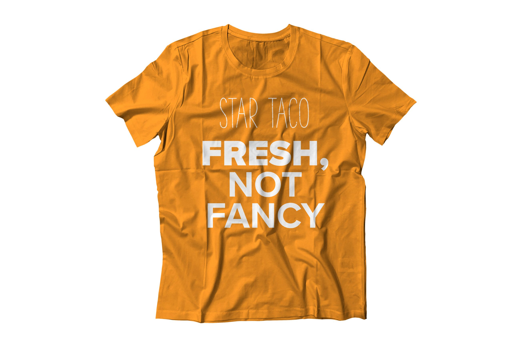
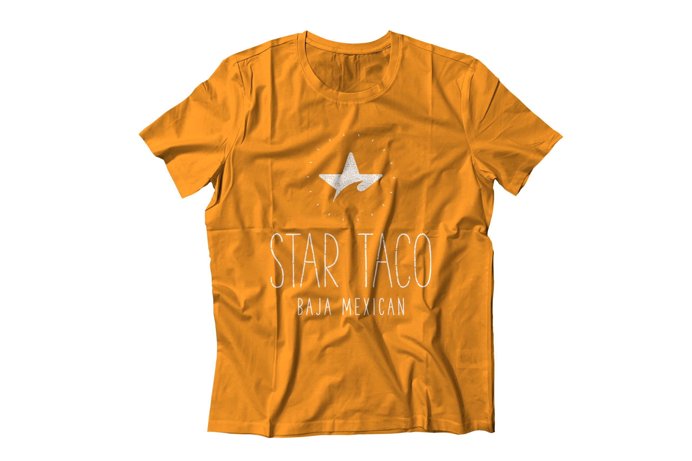
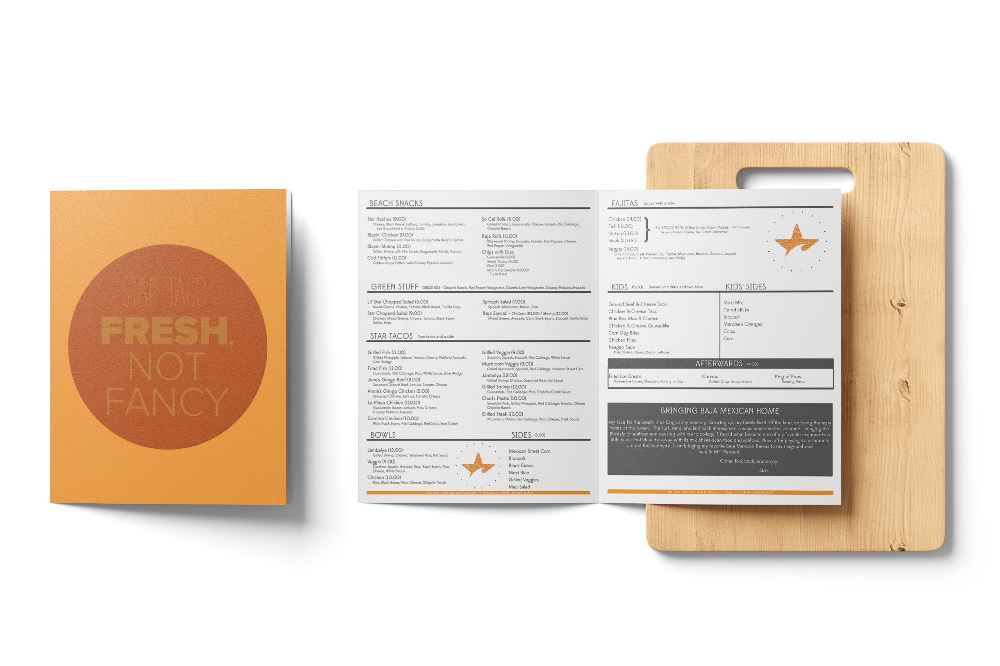
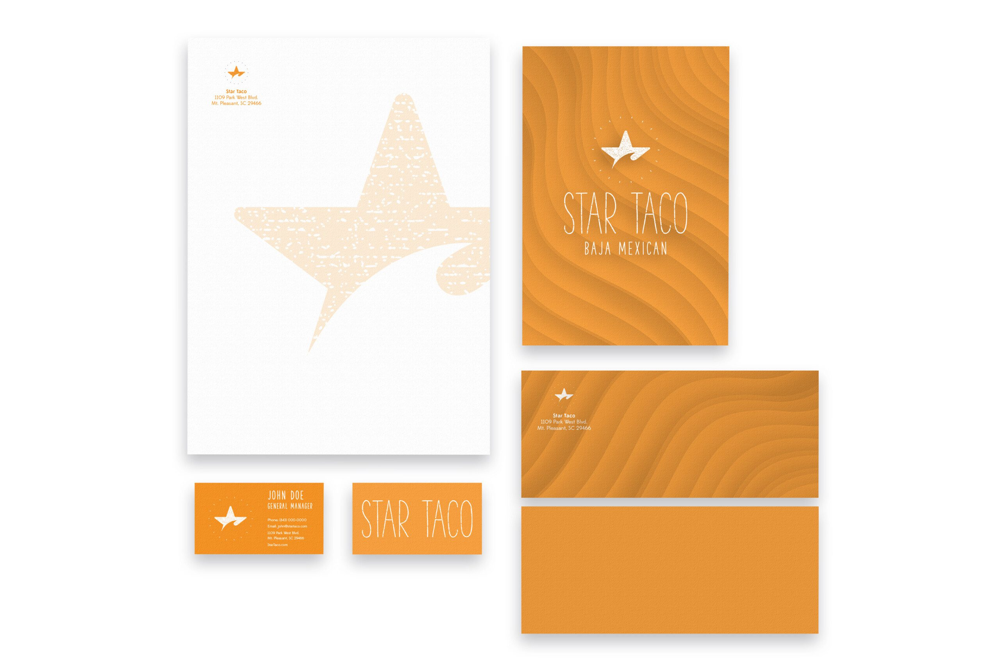

Star
Taco
Brand positioning, logo, apparel, and print design for a Baja-inspired taco restaurant — fresh, not fancy.

Brand positioning, logo, apparel, and print design for a Baja-inspired taco restaurant — fresh, not fancy.
Star Taco was a new restaurant concept with a clear vision — Baja-inspired food, vacation vibes, no pretension — but no brand to communicate any of it. In a market flooded with Mexican restaurants that either go full chain or full upscale, Star Taco needed to carve out a completely different lane: fresh, fun, affordable, and worth coming back to. Without a visual identity, menu system, or brand positioning, the concept was stuck as a conversation instead of a restaurant.
Restaurant branding in the casual dining space is a minefield. Go too polished and you signal "expensive." Go too scrappy and you signal "forgettable." Star Taco needed to land in a very specific place — the feeling of being on vacation without leaving town. The kind of spot where the tacos are thoughtfully crafted but the dress code is flip-flops and the best seat in the house is at the bar with a margarita. The brand had to make people feel that the moment they saw the logo, before they ever tasted the food.
I developed the full brand from positioning through execution. The positioning anchors on one idea: Star Taco turns your dining experience into a delicious escape. "Fresh, not fancy" became the tagline — two words that tell you exactly what you're walking into. From there, I built a logo system, menu design, apparel, stickers, and brand collateral that all reinforce the same carefree energy. Bold color, hand-drawn character, surf-culture typography — everything signals "come as you are."
The result: a brand that feels like it's been around for years — the kind of place locals claim as "their spot" and visitors stumble into and never forget.





